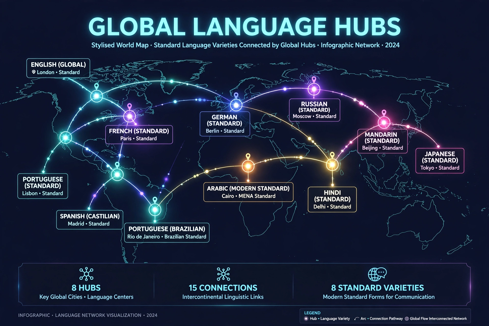

| Concept by | Heinz Kloss; developed by Michael Clyne |
| Definition | A language with several interacting codified standard forms |
| Examples | English, German, Spanish, Arabic, Portuguese, Serbo-Croatian |
| Contrast | Monocentric language (e.g. French, historically) |

A pluricentric language or polycentric language is a language with several interacting codified standard versions, each associated with a different nation or centre, none of which is universally regarded as the sole correct norm. The term derives from Heinz Kloss's work on language planning and was developed extensively by the Australian linguist Michael Clyne.
In a pluricentric language, standards differ in pronunciation, spelling, vocabulary and sometimes grammar, and each standard is supported by its own codifying institutions — academies, dictionaries and style guides. English is the paradigmatic case: British, American, Australian, Indian and other standard Englishes coexist, mutually intelligible but normatively distinct. German has German, Austrian and Swiss standards (the DACH model); Portuguese has European and Brazilian standards; Spanish is coordinated — increasingly pluricentrically — by the Association of Spanish Language Academies.
Scholars distinguish symmetric cases, where centres are of comparable prestige (German in Germany and Austria), from asymmetric ones, where a dominant centre's norm overshadows others (for example, European Portuguese historically versus Brazilian usage, despite Brazil's far larger speaker population). Pluricentricity often tracks political history: colonial expansion, state fragmentation (as with Serbo-Croatian's post-Yugoslav standards: Serbian, Croatian, Bosnian and Montenegrin), or unification of previously separate standards.
Pluricentric standards complicate language teaching, publishing and natural-language processing, which must choose or support multiple norms, but they also allow nations to express identity through their own standard variety while retaining a shared language.